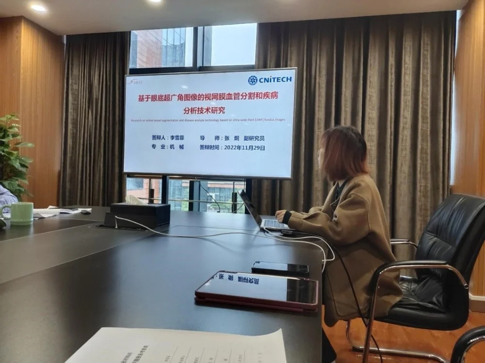

11月29日上午9:30，2021级中国科学院大学硕士生李雪菲和郭鑫雨两位同学在3002进行硕士开题答辩汇报。出席本次答辩会的有我组负责人赵一天研究员和张炯副研究员，以及来自运动康复与医用机器人团队的左国坤等3位老师。
我组同学详细地向各位老师介绍了各自的课题，并展示了目前的工作基础、国内外研究现状调研情况和未来的工作设想。郭鑫雨同学的课题研究是《基于深度学习的眼表多疾病分析》，该课题是我组首次以眼表图像为研究对象，以人工智能技术为手段完成诸如异状胬肉、结膜炎等眼表疾病的大规模诊断与筛查。李雪菲同学的汇报题目为《基于眼底超广角图像的视网膜血管分割和疾病分析技术研究》，旨在通过对超广角眼底图像中的血管进行分割，辅助临床医生完成相关指标的计算，为眼底疾病的预防、诊断及手术评估提供可信赖的技术指导。五位老师针对两位同学的课题进展和调研情况，耐心地为大家指出汇报中的不足之处，并就各课题的临床意义提出了深刻的见解。根据答辩小组老师的讨论，一致同意两位同学通过本次开题答辩。
通过本次答辩，两组同学相互了解了其他研究团队的工作内容，拓宽了视野，充分了解了各自课题研究的不足之处，意识到与不同学者之间的交流对科研的重要性。这次难得的机会促进了两组之间的科研交流和研究所内良好的科研氛围，为将来的科研进步奠定了深厚的基础。相信在赵老师和张老师的带领下，两位同学一定会取得丰硕的科研成果。
